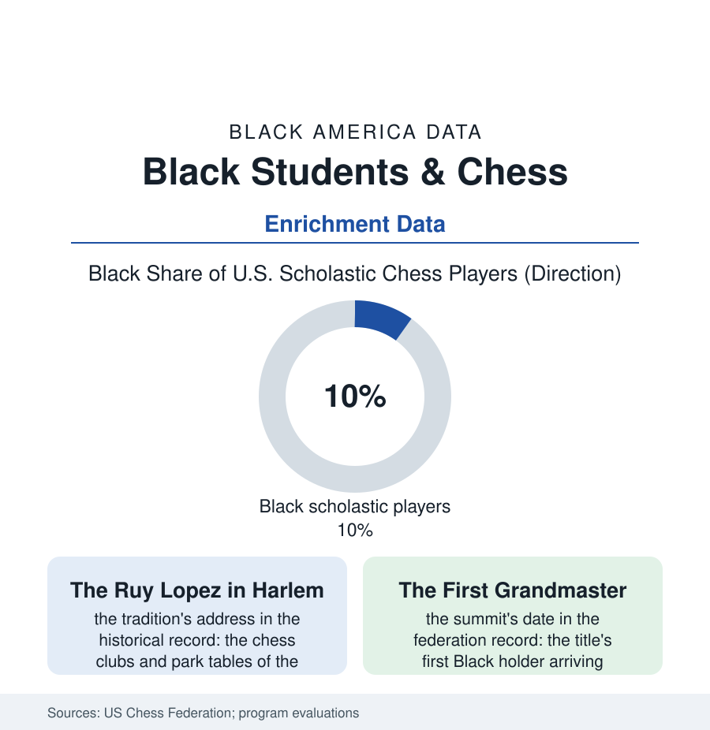

Black Education
64 Squares: Chess and the Black Mind at Play
Chess was supposed to be the meritocracy in a box — and Black players, from the Harlem clubs to the first Black grandmaster, have been proving the mind while documenting the door. The chess file.

The chessboard is the honestest instrument in the enrichment file: sixty-four squares, no luck, no legacy admissions, the result legible to anyone who can read a scoresheet. Black America has played it at every level — in the clubs of Harlem and the parks of every city in this atlas, in the scholastic programs whose trophies fill urban trophy cases, and at the summit the game's own record kept waiting until the century's end. This article reads the chess file.
The Game the Culture Kept
The tradition's roots in the record run through the Black city's intellectual furniture: the chess club as the workingman's salon (the barbershop's back table, the union hall, the park's concrete boards where the regulars' ratings were common knowledge and the hustler's blitz paid the rent in the lean weeks), the game's prestige inside the culture's own academy — chess beside the debate trophy in the segregated school's case, the thinking man's sport in the pages of the Black press, which covered the game's Black masters when the federation's magazine would not. The modern scholastic chapter is the file's celebrated set piece, documented in tournament records the country has seen dramatized: the inner-city teams — Harlem's and Brooklyn's and Detroit's middle schoolers, coached by the teachers who built dynasties in the enrichment file's best tradition — taking the national scholastic championships from the private schools whose chess budgets ran to the private coach and the summer camp circuit, the trophies arriving home on the subway to schools with no trophy budget at all. The program data's claim for the game is the section's enrichment argument in its purest form: the chess student's gains in the evaluation literature (the concentration, the consequence-thinking, the sitting still inside a hard problem — the transfer claims the studies support modestly and the coaches assert absolutely), bought at the enrichment market's lowest price point: a board, a clock, and a room after school. The federation's membership data give the participation picture: Black scholastic players near a tenth of the youth rolls in the program cities, falling off — as in every enrichment file — at the travel circuit's tollbooth (the national tournament's airfare and hotel as the rating's real opponent).
The Summit's Long Wait
The top of the pyramid is the file's historical exhibit: the grandmaster title, chess's terminal credential, held by no Black player until the century's final year — the Jamaican-born, Brooklyn-raised Maurice Ashley's 1999 coronation ending a wait the game's meritocratic self-image is obliged to explain. The explanation lives in the pipeline rows the federation's own data publish: the coaching market's prices, the international circuit's geography (the norm tournaments an ocean and a budget away), the master's study years financed, in every chess nation's system, by a federation, a sponsor, or a family — the inputs sorted by the same distributions as this book's other summits. The generation since has thickened the file measurably: the cadre of Black international masters and national masters grown from a curiosity to a cohort, the girls' game adding its own firsts, the streaming era's chess boom putting the park regulars and the club masters on the world's screens — the hustler's blitz, monetized at last by the platform file. The scholastic base, meanwhile, holds the file's most durable finding in its trophy cases: given a board and a coach who believes the position is winnable, the children of the schools the system wrote off have beaten the system's own academies at the purest thinking game it owns — a result the scoresheets, which do not know the players' zip codes, record without astonishment. The file closes where the club games end: the board reset, the clock rewound, the next opponent seated — the one enrichment in this book whose rematch is always available and always fair, which may be why the culture never let it go.
Reading the Chess Data
The chess file is the education section's control experiment: the game with no excuses, and the door that economics built around it anyway. The federation publishes the ratings. The trophy case in the school with no budget publishes the verdict, in gold plastic, row on row.
More in Black Education
Black Educational Attainment: High School Parity, the College Gap
About 89 percent of Black adults hold a high school diploma and one in four holds a bachelor's degree or higher — the attainment ladder, the college completion gap, and the generational trend.
Historically Black Colleges and Universities: Enrollment and Degrees
More than 100 HBCUs enroll roughly 290,000 students and award about one in six Black bachelor's degrees — an outsized share from a small sector. The federal education data.
Black College Enrollment: 2.4 Million Students
About 2.4 million Black students are enrolled in American colleges — nearly two-thirds of them women. The NCES enrollment data by sector, level, and trend.
Source: U.S. Chess Federation membership and rating data; Chess in the Schools and scholastic program evaluations; National scholastic championship records.